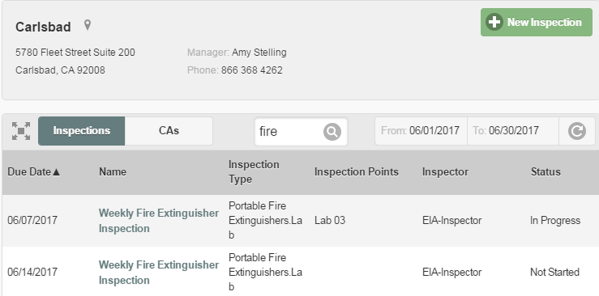
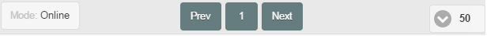

To search for inspections or corrective actions:
Select the facility from the facility sidebar.
If the facility sidebar is not displayed on your screen, select the sidebar button to display it.
Enter text to search for in the Search entry field.
The search will include any of the visible text fields in the table. If no text criteria is entered, all inspections or corrective actions for the chosen time period will be returned.
Cached inspections will show a small download arrow next to the name. See Working Offline with Inspections for more information.
Click the Search button in the text search field.

Results are displayed in table form. You can sort the results by Due Date, Name or Status by clicking on the column head.
If you change the search criteria, click the Refresh button to search again using the new criteria.
Click on the Name to see inspection summary details in a pop-up dialog. From the dialog you can click Go to this Inspection to view the inspection.
Click to expand the search results to full screen if desired.
A navigation bar is available on the bottom to navigate results or set a filter for online or offline inspections.
